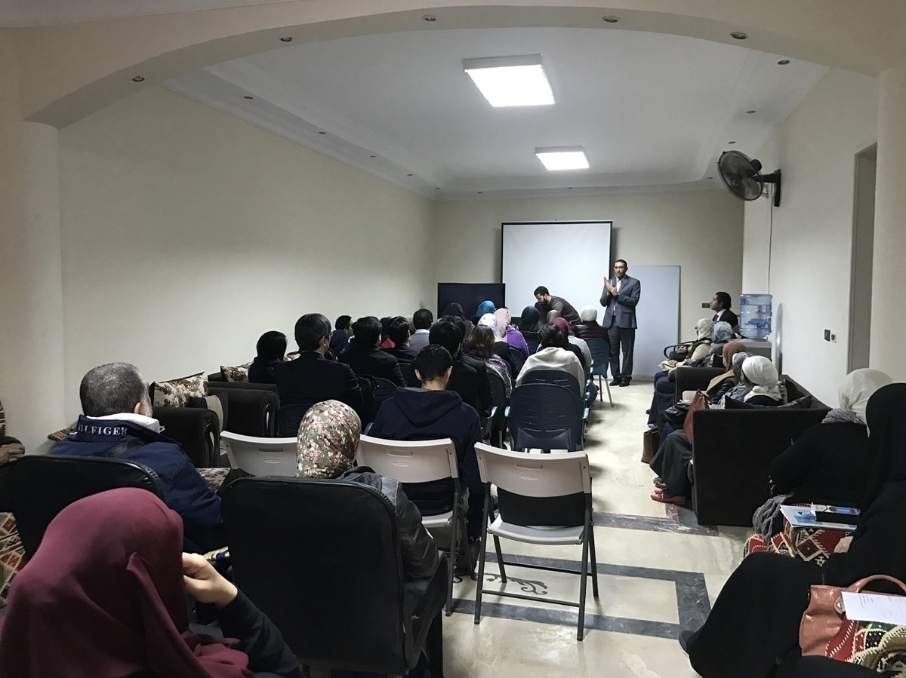

ボランティア紹介 ／ 2018年2月
エジプト人のモハメド・アブデルミギード氏が語るグローバル公民館の誕生秘話
祖先はピラミッドという偉大な遺跡を残した。では自分は、エジプトに何を残せるのだろうか——モハメッド氏がそう自問しながらたどり着いたのが、みんなが集い、ともに学ぶ「公民館」でした。2017年12月25日、エジプトで初めてのグローバル公民館講座が大盛況のうちに開催されました。
▼ 続きを読む
観光学部でエジプトの歴史を学び、旅行会社で10年以上働いていたモハメッド氏。転機となったのは内閣府事業「世界青年の船（SWY16）」への参加。13カ国から集まった約300人の若者と2カ月間生活を共にする中で「教育こそが国の運命を変える」と一念発起し、大学院で国際比較教育を専攻しました。
すべての教育制度を変えるのは難しくても、社会教育なら少しずつ変えられるはず——そう考えて研究を進める中、出会ったのが「公民館」という言葉。琉球大学の井上教授の紹介で沖縄の繁多川公民館と出会い、館長・南氏のもとで公民館講座の運営を手伝う中で、グローバル公民館は「世界とつながる窓」になっていきました。
著者：りむ ／ カテゴリー：ボランティア紹介